Návod a tipy: ceskehry.net (www.ceskehry.net/navody/brany_skeldalu) · návod: Score, úpravy: Majel007, skeny map: dungeony.cz · tipy a triky: Paladin · použito se svolením provozovatelů ceskehry.net · Základy hry, Ovládání a Další tipy: autor Android verze
Ovládáte družinu až šesti dobrodruhů a máte téměř úplnou volnost: kam půjdete, s kým budete mluvit a s kým bojovat, je na vás. Bojem, kouzlením a plněním úkolů postavy sbírají zkušenosti a sílí. Příběh se dozvídáte hlavně z rozhovorů a nalezených svitků.
Obrazovku tvoří horní lišta, pohled do světa a dolní lišta s portréty postav. Z každého okna (inventář, kniha, mapa…) se vrací pravým tlačítkem myši, na Androidu podržením prstu.
Portrét postavy ukazuje jméno, číslo skupiny a tři sloupky: životy (červený), kondici (zelený) a manu (modrý). Nad portrétem se může objevit štít s plusem (nová úroveň, můžete přidělit body), hvězdičky (na postavu působí kouzlo nebo lektvar), chléb nebo lahvička (hlad nebo žízeň).
Klepnutím na portrét se otevře postava a její inventář. Předmět použijete tak, že ho vezmete a klepnete s ním na postavu: oblékne ho, sní nebo vypije. Velikost inventáře závisí na zavazadle. Klepnutím na jméno postavy se místo inventáře ukážou její vlastnosti.
Za zásahy, zabité nepřátele, úspěšná kouzla a splněné úkoly dostávají postavy zkušenosti. Při postupu na novou úroveň přidělíte 5 bodů čtyřem vlastnostem klepnutím na plus:
Všechny čtyři vlastnosti určují, jaké zbraně a zbroj postava může používat. Když klesnou životy na nulu, postava zemře. S nulovou kondicí se postava nemůže hýbat ani bojovat. Útok roste se zbraní v ruce, obrana se zbrojí. Ochrany proti ohni, vodě, zemi, vzduchu a mysli v procentech (nejvýš 75 %) snižují magické zásahy. Bonusy za zbraně rostou tím, jak postava daný druh zbraně používá, a přičítají se k zásahu.
Když je kurzor nad předmětem, dole se ukáže jeho popis: jméno, co předmět mění (útok, obranu, vlastnosti, ochrany, regeneraci při spánku) a jaké vlastnosti postava potřebuje, aby ho mohla používat. Zbraň s popisem „Útok 10–12, Oheň 11–15“ zraní fyzicky i magicky, „Oheň 25%“ znamená ochranu proti ohni o 25 % vyšší.
Jídlo a voda doplňují zásoby, lektvary životy, kondici nebo manu. Když postavě dojde jídlo nebo voda, nemůže odpočívat a začne pomalu umírat. Ostatní předměty se používají na postavy nebo na určitých místech, dají se prodat nebo vyměnit.
Souboj začne, když se k vám nepřítel přiblíží, když do něj vrazíte zezadu, nebo když ho sami zahájíte (Enter, na Androidu tlačítko BOJ) – to platí hlavně u neútočných postav.
Souboj probíhá po kolech. Na začátku kola naplánujete každé postavě, co bude dělat (plánuje se vždy postava s bíle orámovaným portrétem). Postava s více akcemi může dostat několik úkonů za sebou:
Kolo spustíte lebkou uprostřed. Když je v nastavení hry zapnutý automatický útok, postavy bez naplánované akce útočí, jinak stojí. V kole jednají všichni podle iniciativy. Postava s kondicí se brání sama, ale čím víc postav stojí na jednom políčku, tím hůř se každá z nich brání – proti silnému nepříteli je dobré postavy rozestavit. Postavu, která v kole padne, ještě zachrání Léčivý dotyk seslaný v tomtéž kole. Když přijde řada na naplánovaný přesun, kolo se zastaví a postavou popojdete. Zásah do nepřítele se ukáže na místě lebky, zásah postavy na jejím portrétu.
Když při plánování klepnete předmětem do pohledu, postava dostane akci Házet. Pokud akci zrušíte před spuštěním kola, předmět se vám vrátí.
Mimo souboj klepněte na hvězdičky a pak na portrét mága, v souboji na tlačítko Magie. Pak zvolíte živel, runu kouzla a stupeň. Barva drahokamu u stupně říká, jestli to mág zvládne: zelený – má dost zkušeností i many, červený – manu má, ale zkušenosti ne, takže kouzlo může selhat nebo mu vybuchnout v ruce, tmavý – kouzlo seslat nemůže.
Útočná kouzla zasáhnou celé políčko. Nepřátelé mají různé ochrany proti živlům, proto se vyplatí sledovat, na co jsou citliví.
Každý nepřítel má dohled, tedy vzdálenost, na kterou vás uvidí (útočný pak jde za vámi), a vzdálenost, ze které zaútočí. Nepřátelé mají různý počet akcí za kolo, někteří útočí i magicky nebo kouzlí.
Hra se ovládá stejně jako na PC myší a klávesami, dotyk a gamepad je jen napodobují. Všechno se nastavuje v launcheru v Nastavení.
| Gesto | Funkce |
|---|---|
| Klepnutí | levé tlačítko myši: výběr, použití, klepnutí na portrét otevře inventář |
| Podržení prstu (asi 0,5 s) | pravé tlačítko myši: zpět, zavřít okno, otočit předmět |
| Tažení prstem | držené levé tlačítko: přenášení předmětů |
| Tlačítko | Funkce |
|---|---|
| ↑ / ↓ | krok vpřed / vzad (držením jde postava dál) |
| ↺ / ↻ | otočení vlevo / vpravo |
| ← / → (spodní řada) | úkrok vlevo / vpravo |
| ESC | menu „Konec“, zavření okna |
| MAPA | mapa |
| AKCE | akce na stěně (páka, dveře), v souboji další postava |
| BOJ | začít souboj, potvrdit, v souboji spustit kolo |
Další tlačítka zapnete v Nastavení → Dotykové ovládání: ULOŽIT, NAHRÁT, INVENTÁŘ, KNIHA, KOUZLA, SPÁT, NASTAVENÍ, ⌨ (klávesnice kdykoli), CTRL, SLOUČIT, SEBRAT (vše ze země do inventáře), NÁVOD (tento návod), MAPA+, MINIMAPA a KONZOLE. Rozmístění a velikost tlačítek se mění v Nastavení → Rozmístění tlačítek.
Klávesnice se otevře sama u každého textového pole (jméno postavy, název pozice, smlouvání, poznámka v mapě). Když ji zavřete, vrátí ji tlačítko ⌨ Klávesnice nahoře uprostřed.
Poznámky v mapě: klepněte na místo v mapě, objeví se kurzor a klávesnice. Enter nebo klepnutí jinam poznámku uloží, podržení prstu psaní zruší. Klepnutím na poznámku ji upravíte.
| Akce | Dotyk | Gamepad | Klávesnice |
|---|---|---|---|
| přidat postavu do skupiny / odebrat | CTRL (zapnout) + klepnout na portrét | kurzor na portrét + R3 | Ctrl + klik, nebo 1–6 |
| přepnout na jinou skupinu | klepnout na člena skupiny | kurzor + A / ✕ | klik |
| sloučit postavy na políčku | SLOUČIT | D-pad ↓ | Insert |
Vybraná skupina má jména bíle a portréty prosvětlené. Skupiny se mohou rozdělit jen v rámci jednoho levelu.
Funguje přes Bluetooth i USB a na herních handheldech. Levá páčka chodí a otáčí (s držením RB / R1 úkroky), pravá páčka pohybuje kurzorem. Mapování tlačítek změníte v Nastavení → Ovladač → Mapování tlačítek, kde jsou i akce Sebrat vše ze země a Návod.
| Tlačítko | Normálně | S držením RB / R1 |
|---|---|---|
| A / ✕ | klik (levé tlačítko) | F10 Výzbroj (souboj) |
| B / ○ | pravé tlačítko (zpět) | F9 Pohyb (souboj) |
| X / □ | Enter (začít souboj, potvrdit) | F7 Kouzla |
| Y / △ | mezerník (akce na stěně) | F8 Útok (souboj) |
| Back / Share | F1 Nastavení | F2 Uložit hru |
| Start / Options | Esc (menu, zavřít) | F3 Nahrát hru |
| LB / L1 | Backspace (zrušit akci v souboji) | F4 Odpočinek |
| R3 | Ctrl + klik (rozdělit skupinu) | – |
| D-pad ↑ / ↓ | mapa / spojit skupinu | F11 Útěk / F6 Kniha |
| D-pad ← / →, LT / RT | úkrok vlevo / vpravo | úkroky |
| Klávesa | Funkce | Klávesa | Funkce |
|---|---|---|---|
| šipky | chůze a otáčení | End / PgDn | úkroky |
| Tab | mapa | mezerník | akce na stěně |
| Enter | začít souboj | Esc | menu, zavřít |
| F1 | nastavení hry | F2 / F3 | uložit / nahrát |
| F4 | odpočinek | F5 | rychlé uložení |
| F6 | kniha | F7 | kouzla |
| I | inventář | 1–6 | postava do skupiny |
| Insert | sloučit skupinu | G | sebrat vše ze země |
| H | návod | O / N / ` | MAPA+ / minimapa / konzole |
V souboji: F8 útok, F9 pohyb, F10 výzbroj, F11 útěk, F12 žádná akce, Backspace zrušit.
V Nastavení → Úpravy hry lze zapnout minimapu i mimo souboj, ukazatel životů nepřátel (číslo nebo proužek), průhlednou mapu přes obraz (MAPA+), rychlost hry, konzoli a sebrané předměty rovnou do inventáře: klepnutý předmět na zemi se uloží do volného místa v inventáři, s tlačítkem CTRL se vezme do ruky jako dřív. Tlačítko SEBRAT nebo klávesa G vezme najednou všechno, co leží na vašem políčku a na přední polovině políčka před vámi. Co se nikam nevejde, zůstane na zemi.
Když odejdete z aplikace, hra se pozastaví a volitelně se před tím uloží do pozice „autosave“. Tlačítko Zpět funguje jako Esc. Uložené pozice jsou kompatibilní s PC verzí.
Především si opravdu zvykněte rozdělovat v obtížných situacích svou družinu. Nejenže je to potřeba při řešení logických úkolů (jeden z nich je už ve Skřetích jeskyních), ale dává vám to do ruky poměrně silnou zbraň, kterak donutit útočníka útočit jen na ty členy vaší družiny, kteří to snesou. V prvních fázích hry se, pravda, obejdete i bez toho, ale později se vám metoda, kdy vystrčíte dopředu dva nejlépe vyzbrojené bojovníky, a pak přes ně vaši mágové vrhají firebally a lučištníci střílí své šípy, bude hodit. Nehledě k tomu, že pak můžete využít manu mágů k posilovacím kouzlům během souboje, aniž byste se museli bát, že ji budou potřebovat pro sebe.
Ještě připomínám, že fireball či šíp proletí pouze přes jednoho nebo dva vaše hrdiny stojící na jednom políčku, neplatí to však pro šípy a firebally vašich protivníků, ty vždy zasahují první řady. U silnějších protivníků je rozdělení družiny až na jednotlivce vhodné také proto, že se pak každý jednotlivec lépe brání, neboť mu nikdo nezabraňuje v pohybu.
Neútočná a útočná kouzla je možné určitým způsobem kombinovat. Asi nejzákladnější kombinací, která napadne každého z vás, je obranyschopnost, odolnost proti magii a zrychlení. Někdy je možné přidat i kouzlo berserkr nebo oko za oko, nebo neviditelnost, nebo všechno. Většinou však na to není mana. Problémy s manou se pak projevují i u jiných kouzel. Například váhy osudu jsou poměrně náročné, zvláště pak na vyšší stupně, a proto je většinou nutné zakouzlit nejprve zdroj many, aby mág získal dostatečnou energii na vyvolání kouzla.
Jako jistá možnost, jak porazit tuhého protivníka, je použití kombinace hlubina a reinkarnace. Zakouzlíte na slabého člena družiny hlubinu a vystrčíte jej před nepřítele, ten ho zabije, ale vlivem kouzla je stažen do světa smrti s vaším druhem. Na svého druha pak lze použít reinkarnaci a máte jej zpět. Ovšem pozor, za oživení je postih, kdy se vám snižují zkušenosti na úroveň poslední dosažené úrovně, proto je vhodné tuto kombinaci použít tehdy, pokud oběť teprve před nedávnem postoupila z úrovně do úrovně, a samozřejmě nikdy, když ji to zrovna čeká, protože jinak přijdete o pracně nastřádané zkušenosti.
Mějte zapnutý autosave, ten vám ukládá hru vždy při vstupu do nového levelu, před započetím dialogu a při opuštění hry. Pokouší se také uložit hru při možné běhové chybě, ale v tomto případě není spolehlivý. Obzvláště důležité je uložit hru před dialogem, některé špatně vedené dialogy totiž mohou vyústit v nezvratnou situaci, ze které se již hra buď dokončit nedá, nebo se dá dokončit jen velmi obtížně. Vždy, když takovou chybu uděláte, budete na to upozorněni.
Učitel boje vycvičí vaši postavu v určité vlastnosti – síle, obratnosti, pohyblivosti – jen tehdy, pokud jste v ní dosáhli alespoň dvaceti a ne více než třiceti bodů. Je tedy rozumné neplýtvat body při přestupu z úrovně na úroveň a raději při dosažení dvaceti bodů zaplatit výcvik na třicet, a pak teprve přidělovat body. Nehledě k tomu, že u učitele existuje cosi jako základní výcvik. Totéž platí i u magického mistra, kde kromě zvyšování hodnot umění magie dostáváte i nové magické runy.
Konečně při výběru postavy dbejte na to, aby vaši dobrodruzi měli co nejlepší vlastnosti. Osvědčilo se mít na každý obor svého specialistu. Ve hře nejsou povolání, a proto je jen na vás, koho si na co vycvičíte. Doporučoval bych jednoho opravdu dobrého mága, jednoho vynikajícího bojovníka-siláka a jednu lučištnici s určitými magickými schopnostmi, tedy vlastnostmi umění magie a pohyblivost.
Posuvník při výběru postav – Nejsem si jist, zda všichni víte, že jde hýbat s posuvníkem při výběru postavy. Můžete si tak změnit kupříkladu sílu na úkor magie, zvýšit rychlost a naproti tomu snížit obratnost. Zkrátka a dobře, takto si můžete navolit ty vlastnosti, které vám u dané postavy vyhovují. Nahoře se pak objevují rozmezí, ze kterých budou náhodně generovaná čísla vybírána.
Dohrání se třemi postavami – Třetí patro Bílé věže, to se šesti pákami, lze dohrát i se třemi postavami a trochou kouzlení. Je však nezbytně nutné, aby jeden z členů uměl zakouzlit Připojení. S tímto mágem se přesuňte k šesté páce a zbylé dva postavte k prvním dvěma. Nejprve stiskněte první a druhou, pak nechte obě postavy připojit ke kouzelníkovi. Od šesté páky se dá sejít níže ke čtvrté a odtud k páté. Stiskněte čtvrtou, pátou, pak kouzelník šestou a máte vyhráno. Takto nemusíte do družiny nikoho přijmout, a přesto hru dohrajete.
Počáteční hodnoty postav – Počáteční hodnoty postav se generují náhodně. Maximální součet je 68 bodů, takový případ ale nikdy nenastane. Je dobré zkoušením dospět alespoň k součtu nad 60, určitě se vám to vyplatí. Je to sice trochu zdržující, ale čestné.
Vyšší úroveň – V této hře se velice těžko přechází na vyšší úroveň. Mějte proto na paměti, že vámi vybrané postavy budou mít největší šanci se zdokonalit. Vřele doporučuji obětovat několik stovek za zvýšení čehokoliv z 20 na 30 u Mistra zbrojíře nebo Elfího učence. Všechny body za úroveň by měly jít přes 30 nebo do dvaceti. Prsteny vám zvyšují sílu, obratnost nebo magii o deset bodů, a to navždy. Jiným způsobem ani 65 bodů síly nedosáhnete. Soustřeďte se tedy na zvyšování pohyblivosti, která vám dává akci navíc za každých 15 bodů.
Oživení kostry – Pokud nějaká postava zemře, může družina nosit její ostatky s sebou: vstupte na pole, kde postava padla, a Ctrl + klepnutím na lebku připojíte kostru ke své družině. Takto s ní můžete cestovat i mezi levely.
Pro kostru, kterou jste nechali v jiném levelu, se můžete kdykoli vrátit a postavu pak oživit. Kouzlo Reinkarnace oživí i postavy, jejichž tělo je nedosažitelné (propast, utonutí, oheň), a přenese je k mágovi.
Obchodník nemá… – Může se vám stát, že si chcete koupit nějakou zbraň nebo jiný předmět, ale obchodník jej zrovna nemá. V takovém případě nezbývá nic jiného, než dát slovo času. Nejlépe je se vyspat nebo se jen tak projít kolem Caredbaru. Při další návštěvě by se měly věci na skladě doplnit. Takto se dají získat kupříkladu předměty, které jsou k mání vždy jen v jednom exempláři (Mágovo oko, Kowernigova kutna…).
Smlouvání – Nepodceňujte možnost smlouvat při koupi jakéhokoliv zboží. V některých případech můžete ušetřit drahocenné peníze, které lze využít jinak. Snad nejmarkantnějším případem je Meč na duchy, jehož cenu můžete srazit z 825 až na nějakých 770, což je ze začátku více než skvělé.
Dvě zbraně v rukou – Vaše postava může v rukou třímat dvě jednoruční zbraně najednou. Útok se v tomto případě sčítá, stejně jako případná obrana zbraní. Pokud máte dostatečně pevné brnění, je toto nejlepší způsob, jak porážet silné netvory.
Postava musí splnit součet požadavků obou zbraní, místo požadavku druhé zbraně ale může použít Obratnost (např. zbraně se silou 20 a 30 lze držet se Silou 30 a Obratností 30). Útok dvěma zbraněmi zblízka znamená dva útoky za jednu akci.
Lexikon kouzel – V Nitru sopky je za hořící stěnou Lexikon kouzel, ze kterého se můžete naučit tři poslední kouzla Ohně. Než začnete tuto magickou knihu číst, raději si hru uložte.
Neznámé jídlo – Některé potraviny jsou jedovaté. Co neznáte, raději nejezte.
Křehké předměty – Lahve a lektvary se mohou rozbít. Neházejte s nimi.
Díry a voda – Předmět položený do díry propadne o patro níž, předmět položený do vody zmizí navždy.
Ústí teleportu – Nestůjte v místě, kam vede teleport. Nestvůra, která jím projde, se objeví přímo ve vaší postavě a ta zemře. Funguje to i obráceně: pevným teleportem (ne kouzlem) můžete zabít nestvůru, která stojí v jeho ústí. Předměty, ohnivé koule i magické střely vhozené do teleportu vyletí v jeho ústí.
Malý růžový slon – Když selže kouzlo Odolnost proti magii, postava dostane asi 2000 životů navíc, ale nemůže kouzlit a nemá žádný útok. Až účinek skončí, o těch 2000 životů zase přijde, a pokud je mezitím ztratila v boji, zemře. Takovou postavu raději odveďte z bojiště.
Zloději – Některé nestvůry sbírají předměty ze země a dokážou okrást i mrtvou postavu. Věci pak najdete v inventáři nestvůry.
Kouzla do zdi – Kouzlo vržené do zdi zasáhne vlastní skupinu. Jedinou výjimkou je Teleportace 3. stupně, která teleportuje to, co stojí před mágem, a před zdí teleportuje skupinu. Kouzla Oko za oko a Nastav tvář nekombinujte, postava by zahynula.
Překvapení za rohem – Do odbočky vcházejte bokem, nestvůra číhající za rohem vás pak nepřekvapí.
Vylákání nestvůry – Hoďte předmět před její úkryt a schovejte se. Nestvůra půjde za zvukem a může se k vám otočit zády.
Hloupé nestvůry – Neinteligentní nestvůry ztrácí v boji orientaci a otočení je stojí akci. Postavte bojovníka před nestvůru a lučištníka o políčko vedle. Každý zásah šípem nestvůru otočí k lučištníkovi a v dalším tahu se musí nejprve otočit zpátky.
Chytré nestvůry – Inteligentní nestvůry si vybírají cíl do vzdálenosti dvou políček a orientují se dobře. Slabé postavy odveďte mimo čtverec 5×5 políček kolem nich.
Bouchni a uteč – Pohyblivé postavy mohou několikrát udeřit a jako poslední akci zvolit útěk. Stojí to hodně kondice, ale je to dobrý způsob, jak poznat neznámou nestvůru.
Dveře a tlačítka v souboji – Během přesunu lze otevřít dveře nebo stisknout tlačítko na stěně. Je to vždy poslední úkon přesunu.
Rychlý odchod – Když potřebujete postavu dostat z políčka co nejdřív, naplánujte jí přesun několikrát za sebou. Má pak větší šanci odejít hned na začátku kola. Stejně můžete přesun odložit: když na postavu přijde řada a přesouvat se ještě nechcete, stiskněte Enter a postava počká.
Útok na příchozího – Čekáte-li, že nestvůra v tomto kole dorazí, naplánujte útok předem. Získáte výhodu prvního úderu.
Boj skrz dveře – Nalákejte nepřítele ke dveřím a těsně před ním je zavřete. Pak dveře otevřete, nepřítel stojí zády. Naplánujte postavám útok a jako poslední akci přesun zpět za dveře, které poslední postava zase zavře. Opakujte, dokud nepřítel nepadne. Potřebujete postavy se dvěma a více akcemi.
Skřet – Skřet žijící v tmavých zatuchlých Skřetích jeskyních je relativně slabým protivníkem. Je vyzbrojen těžkou jednobřitou sekerou a zesíleným dřevěným štítem, je ale malý, zbabělý, slabý a nepohyblivý.
Striga – Striga je stvoření, které bylo vinou kletby proměněno z mladé humanoidní bytosti na velmi nebezpečnou zrůdu. Skřeti ji z nerozumu chovají kvůli ochraně svých jeskyní. Je velmi silná.
Skřítek – Původní obyvatel ostrova Rovenland, mírumilovné stvoření nízkého vzrůstu, které žije ve městě a nebojuje.
Člověk – Druh, který se při své ekonomické a kulturní expanzi usadil i na Rovenlandu, ve městě Caredbaru. Nebojuje.
Zeigr – kostlivec – Původce všeho zla. Je to stvoření, které bylo dříve člověkem, ale po své smrti bylo černou magií přivoláno k neživotu, nebo si samo, když bylo ještě člověkem, zvolilo službu temným silám. V druhém případě je Zeigr mnohem silnější. S postupující temnotou je možné nalézt Zeigra na nejrůznějších místech Rovenlandu, jako jsou Skřetí jeskyně, Začarovaný les a podobně. V každém dalším levelu je silnější.
Duch – Zatracené duše nehodných se shromažďují v Soutěsce bloudících duší. Fyzické zbraně na ně nepůsobí, je proto nutné je zdolat kouzly nebo zbraněmi s magickým útokem, proti kterým nemají obranu.
Golem – Golem je stvoření, které bylo pomocí magie složeno z kostí nejrůznějších zvířat. Díky tomu má určitou obranu proti magii v živlu země. Je také velmi silný.
Tworg – pabizon – Mírumilovné neagresivní stvoření pasoucí se na pláních u moře je loveno převážně pro svou teplou kůži, kterou zuřivě, leč pro zkušeného bojovníka neúčinně, brání.
Dryáda – Dryády jsou ženy, které žijí ve svém lese bez přítomnosti mužů v absolutním spříznění s přírodou. Každá dryáda je spjata se svým stromem a žije tak dlouho jako její strom. Dryády si střeží hranice svého lesa a zabíjejí všechny narušitele této hranice. Pokud však tuto hranici překročí malé děvčátko, dryády je nezabijí, ale pomocí lektvarů přetvoří v jednu z nich, tedy v dryádu. Dryády jsou velmi rychlé, ve svém lese se vyznají a umějí bravurně zacházet s lukem. Při souboji se brání kontaktnímu boji a utíkají před vámi, protože jako první má dryáda dvě akce za kolo. Je tedy potřeba je buď zahnat do kouta, nebo usmažit firebally, magickými střelami, blesky, a nebo šípy.
Strom – Protože je Rovenland prosycen manou, ožily některé stromy a nyní spolu s dryádami brání čistou přírodu v jejich lese proti narušitelům. Stromy jsou sice pomalé, ale zato velmi silné a houževnaté, může být velmi náročné je zdolat. Mají navíc slabou obranu proti magii v živlu země.
Troll – Líné, málo pohyblivé stvoření přibližně humanoidních tvarů, ale stvořené převážně z kamene, se usadilo v soutěsce spojující Les kolem Caredbaru a Temný les. Troll sice nechodí, ale pokud udeří, způsobí kromě zranění všem členům družiny i snížení pohyblivosti a obratnosti. Má jistou odolnost vůči magii, zvláště pak ohni. Zuby tohoto tvora jsou tvořeny diamanty, pokud jej zabijete, nezapomeňte si je sebrat.
Zenox – Zenox, muž s ptačí hlavou, stráží stezku spojující Les dryád s Temným lesem. Je velmi inteligentní a je možné s ním komunikovat. Zadarmo však nikoho projít nenechá. Je silný a odolný. Jako magické stvoření má i jeho úder na cíl magické účinky. Nehýbe se však z místa.
Apagh – Velmi hbitá šelma žijící v Temném lese. Je rychlá a útočná a je těžké se jí bránit, zvláště pak nemá-li bojovník dost prostoru k boji. Jako první má tři akce za kolo.
Bruxa – vampír – Nemrtvý, který zabíjí tak, že z jiných bytostí vysává tělní tekutiny. Zabalí je do svého pláště, který je součástí jeho těla, a pak z nich vysaje život. Žije v Temném lese.
Temný rytíř – Přívrženci řádu, kteří se dali do služeb jednoho z pěti odpadlých mágů, učedníka bílého mága Nimetha. Je velmi silný a odolný, ale těžkopádný a pomalý. Obývá Neviditelné město.
Mnich – Cech odpadlých mnichů, kteří se v době, kdy Teraniel obsazoval Governigod, přidali na jeho stranu. Nyní spolu s Temnými rytíři stráží Neviditelné město, jeho sídlo.
Stín mága na Větrné hoře – Protože Takra, další z pěti mágů, nenašel své následovníky, vytvořil své stíny, aby mu pomáhaly spolu s přirozenými obyvateli Větrné hory strážit jeho sídlo. Umožnil jim používat v omezené míře magii.
Grifon – Okřídlená šelma obývající výšiny Větrné hory. Je velmi rychlá, nebezpečná a může létat nad propastmi. Stejně jako u většiny magických stvoření má i její klovnutí magický účinek.
Větrný drak – Drak žijící na vrcholcích Větrné hory je díky své odolnosti a velmi nebezpečné zelené plazmě, kterou chrlí, téměř neporazitelný. Nepůsobí na něj magie v živlu vzduchu a má částečnou odolnost proti ostatním druhům magie.
Stín mága vody – Stejně jako Takra, ani Natral nenalezl své následovníky a vytvořil proto své stíny, aby chránily jeho sídlo, Ledové jeskyně, a umožnil jim používat v omezené míře magii.
Piraňa – Přirozený obyvatel zaplavených částí Ledových jeskyní. Piraňa je malá a mrštná, ale zato velmi slabá. Její síla spočívá v hejnu.
Vodní elementál – Další z Natralových přisluhovačů. Magií stvořený agresivní shluk vody. Nepůsobí na něj žádné kouzlo v živlu vody.
Ledový drak – Svým ledovým dechem dokáže zabít zdravého, silného muže v plné zbroji. Navíc má velmi tuhý kořínek, částečnou odolnost proti všem druhům magie a úplnou odolnost proti magii v živlu vody.
Stín mága země – Sa-Aquen je posledním ze tří mágů, kteří na obranu svého sídla povolali své stíny. Tak jako ostatní i Sa-Aquen jim umožnil používat magii.
Pwok – Magií zmutovaný přerostlý pavouk žijící v Podzemí. Je rychlý, silný a odolný.
Ohnivý muž – Obyvatel nitra aktivní sopky. Je to humanoid, který je tvořen jen ohněm. Nepůsobí proti němu tedy žádné kouzlo v živlu ohně a nepůsobí na něj žádné zbraně nemající magický účinek.
Jessia – Levitující lávová koule, která se rodí z lávových jezírek. Pokud je Jessia dostatečně stará, utvoří se tlakem v jejím nitru diamant. Nepůsobí proti ní kouzla v živlu ohně.
Ohnivý drak – Žije v nitru sopky a jen málo z fyzických zbraní i kouzel mu ublíží, kouzla v živlu ohně mu neublíží vůbec. Chrlí oheň a zabíjí jedním dechem. Je však velmi pomalý.
Tiroka – Nejvyšší stráž v magické věži Skeldalu. Je to kouzelná bytost, která je proti všem druhům útoků zčásti chráněna magií svých stvořitelů. Má poloviční ochranu proti všem druhům magie, vysokou obranu proti fyzickým útokům a její pohled, kterým zabíjí, působí přímo na podstatu bytí protivníka. Je nezbytné mít proti ní magické štíty. Navíc má čtyři akce za kolo.
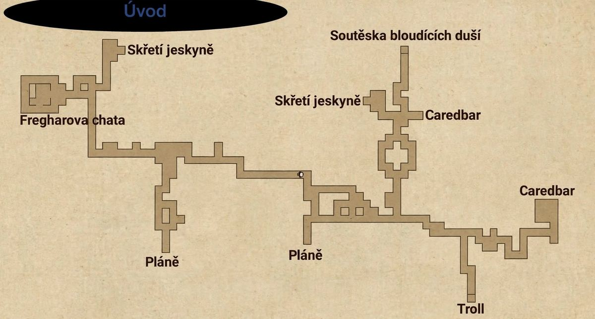
Se svými třemi dobrodruhy se poté, co jste byli přivoláni rituálem Krow-Kane, probudíte v chatě učence Freghara. Krow-Kane je rituál, který vytrhne z nejrůznějších světů a míst požadovaný počet lidí, kteří se nejlépe hodí pro zadaný úkol, a má tu vlastnost, že jim nedovolí si vzpomenout na minulý život, a to až do té doby, než splní svůj úkol; pak jejich dočasná existence zaniká a oni se vrací na svá původní místa. Zda si i poté, co se vrátí, pamatují něco ze svých dobrodružství, není známo. Před sebou na stole máte Fregharův list, v němž vám vysvětluje důvody vaší přítomnosti a vše, co jste se nedozvěděli v intru. Svitek se po sebrání automaticky zapíše do knihy, kde jej už navždy budete mít. Ještě v chatě vám tragicky zesnulý Freghar zanechal bandalír se dvěma dýkami, botami a lektvarem. Ten seberte, rozdělte předměty a vydejte se do Skřetích jeskyní.
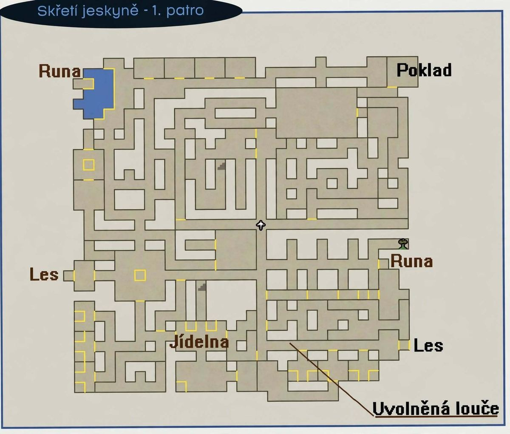
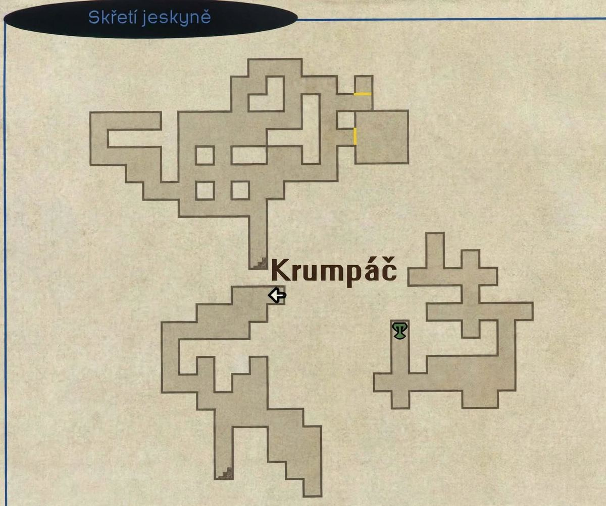
Je zřejmě jedinou nutností vydat se nejprve do Skřetích jeskyní, neboť na začátku nemáte ani floka a je potřeba nejprve nasbírat něco předmětů, které se pak dají ve městě Caredbaru vhodně zpeněžit. V úplně prvním souboji bych být vámi vyplácal na skřeta všechny firebally, co máte, pokud jsou tedy vaše postavy schopny kouzlit. Při opravdu špatném navolení postav je možná lepší začít znovu (znovu volit postavy), dokud je ještě čas. Pokud tak neučiníte, pak máte zřejmě jedinou možnost – riskovat backfiry při vyvolávání fireballů nezkušeným mágem. Na strigu bych si troufnul určitě nejdříve až po první návštěvě města s náručí plnou skřetích štítů a seker. Až si budete jisti sami sebou, vydejte se hlouběji do nitra Skřetích jeskyní.
Ve zbrojnici, to je místnost se spoustou zbraní, jedním skřetem a jednou strigou, je na severní stěně tlačítko, které otevírá tajnou slepou chodbičku v západní stěně zbrojnice. Dále na východ od zbrojnice je iluzorní stěna, hra vám sama napíše, že z té strany zavál vítr. Tou projděte a opět stlačte tlačítko. Otevře se stěna nedaleko v malé místnosti s oltářem, kolem kterého pobíhá další striga. V místě označeném na mapě jako „uvolněná louč“ vyjměte z držáku louči a s její pomocí propalte obří pavučiny. Pak už louči nepotřebujete a můžete ji zahodit. V téže chodbě jako pavučiny je i cedule s nápisem „Chodba skřetích králů“, tou projděte, protože je rovněž iluzorní. V oltáři je vložena runa s magickou střelou. Než projdete teleportem do malé části spodního patra, ujistěte se, že jste v dobré kondici a dobře vyzbrojeni. Je to sice jen malý kousek, ale budete jej muset projít najednou až k druhému teleportu.
Zpátky v prvním patře je v chodbě vedoucí na východ z velké křižovatky další iluzorní stěna. V jedné z malých obyvatelných místností, do kterých se dostanete z chodby vedoucí od druhého vchodu do Skřetích jeskyní (blíže ke Caredbaru), je tlačítko a za ním tajná místnost. Jděte do jídelny (místnost se stoly vedle místnosti s krbem a zásobárnou jídla) a tam pootočte oběma loučemi, které jsou naproti stolům. Mezi stoly se otevře tajná chodba se schody vedoucími do další části nižšího patra.
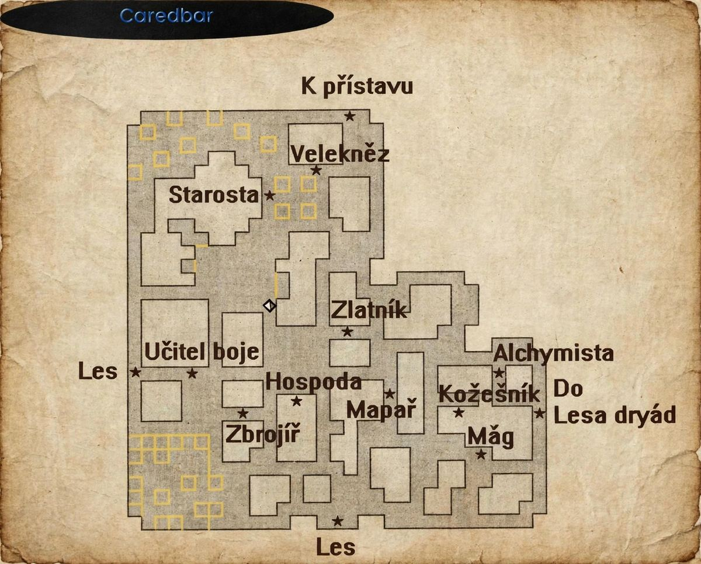
Tam je potřeba nalézt krumpáč, který se dá použít i jako zbraň, ale vy jej budete potřebovat k prokopání závalu v prvním patře. Za ním se opět nachází schody do poslední části nižšího patra Skřetích jeskyní. Poslední sled úkolů se opět nachází v prvním patře. Jděte k jezírku a rozdělte svou družinu na dvě části, každou postavte k jednomu z tlačítek, která jsou na stěnách při okraji jezírka. A nyní je bez přecházení mezi nimi najednou zmáčkněte. Přes jezírko se zvedne most. Na druhém břehu naleznete runu s opravdovým viděním a tlačítko, které otevírá tajnou chodbu v Trůnním sále, která vede ke skřetímu pokladu. Kromě pokladu tam naleznete i nového člena družiny, zloděje Rolanda. Pokud patříte mezi zásadové jedince a zlodějíčka jste odmítli, pak je docela možné, že budete mít později problémy, ale kdo ví?
Poklad skřetího krále můžete, ostatně jako cokoliv jiného, zpeněžit ve městě. S pokladem se vydáte ke zlatníkovi, který s vámi bude chvíli smlouvat, ale poklad od vás rád za 2000 zlatých odkoupí. Ve městě se nachází spousta zajímavých věcí, o kterých byste měli vědět. Není celkem těžké na ně přijít, ale i přesto si o nich něco řekneme. Starosta i velekněz mají v podstatě jen informativní charakter. Nic nenabízí, ani neprodávají. Zato Mistr zbrojíř, Mistr magie, Kouzelník, Alchymista, Hospodský a Stánkaři prodávají vše, co potřebujete. U kresliče map si kupte mapu celého ostrova, s jejíž pomocí se lze rychle přesouvat mezi lokacemi. U mistra magie a učitele bojových umění se vaše družina může vycvičit. U zlatníka lze kromě pokladu jen prodávat nalezené drahokamy. Všechny důležité vchody jsou označeny výrazným průčelím a vývěsním štítem, kromě vchodu do paláců. Dalšího člena družiny získáte poměrně snadno.
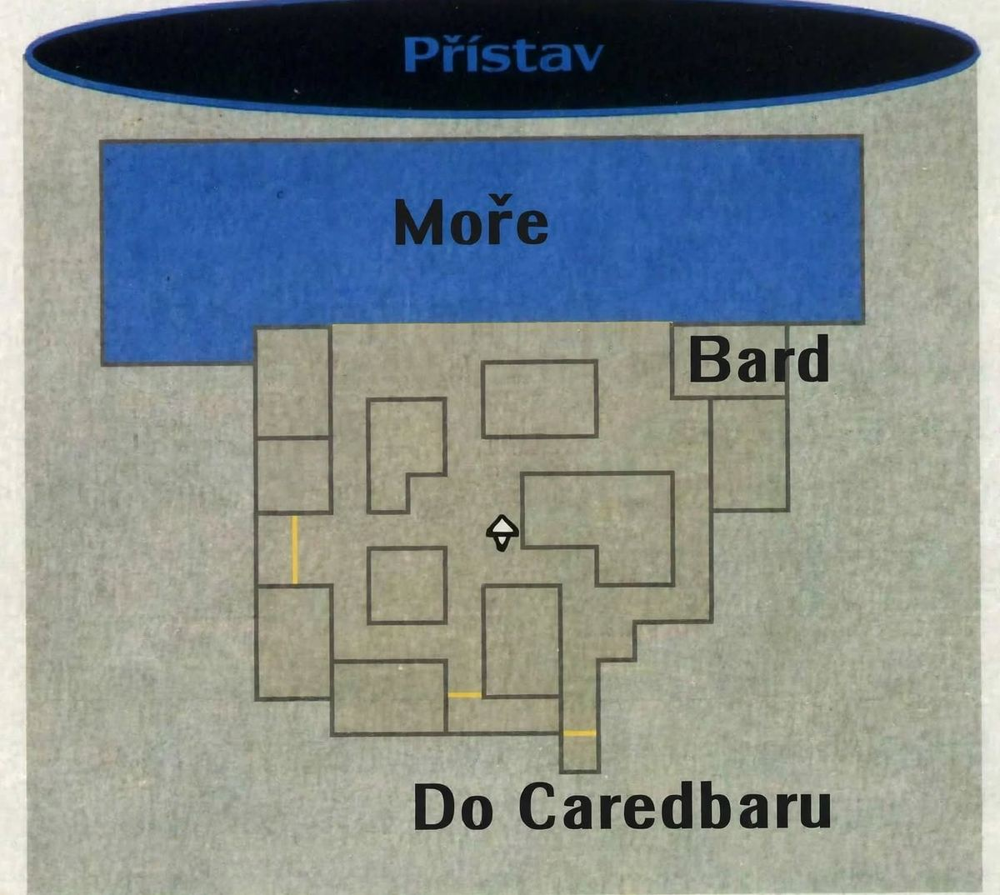
Zajdete do knihovny, která se nachází v honosném domě na náměstí s hospodou. Je to syn místního knihovníka, který se k vám připojí proti vůli svého otce. Nemělo smysl chodit dřív, než jste prodali poklad zlatníkovi, protože jste si nejdříve museli získat jakýsi respekt. Nyní vyjděte severním východem z města a vydejte se do přístavu. Tam, v pravém horním rohu mapy až u moře naleznete barda-mudrce. Dobře si s ním pohovořte. Kromě toho, že vám dá Panovu flétnu (uschovejte pro pozdější použití), poradí vám, abyste šli do Soutěsky bloudících duší, tak to udělejte. Ještě před tím se však nezapomeňte vyzbrojit vhodnými zbraněmi. Jsou to všechny, které mají vedle fyzického účinku zásahu i nějaký magický, i když dostupný vám bude pravděpodobně jen Meč na duchy. Samozřejmě by také nebylo od věci co nejvíce vylepšit vaše mágy, ať už se jedná o studium nových kouzel nebo koupi předmětů (holí a prstenů), které zvyšují možnou zásobu many.
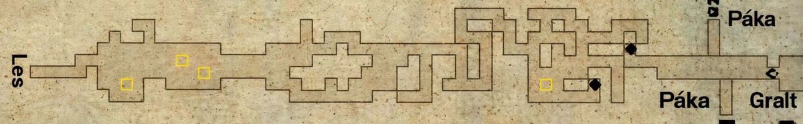
Tento level není nijak dlouhý ani náročný. Po cestě sbírejte všechny drahokamy, které později s úspěchem prodáte ve městě. Na konci použijte kouzlo skutečné vidění a zatáhněte za obě páky, které se vám odhalí za iluzorními stěnami. Dveře na konci soutěsky se otevřou a za nimi potkáte posledního člena družiny, schopného mága Gralta. Vraťte se zpět k bardovi.
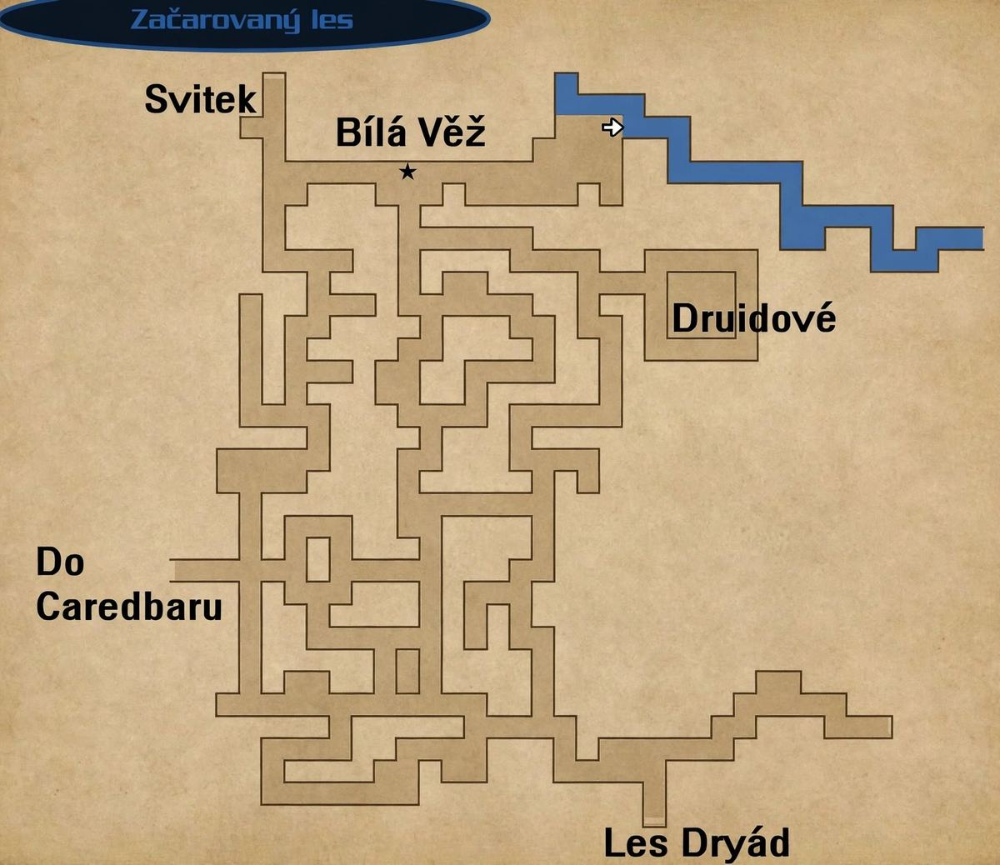
Pokud jste po rozhovoru s Graltem a druhém rozhovoru s bardem získali pocit, že někdo ví víc, než říká, pak máte jistě pravdu, ale nemůžete s tím nic dělat, takže nemá smysl se tím zatěžovat. Každopádně vám bard dá talisman, posvátný kříž, který vám umožní projít nástrahami Začarovaného lesa. V Začarovaném lese jsou důležitá dvě místa. Prvním je svatyně druidů, kterou samozřejmě navštivte. Na přiložené mapě je označena a nachází se za iluzorní stěnou. S druidy si pořádně promluvte. Měli byste od nich dostat posvátný strom, který vám později pomůže získat když ne zrovna náklonnost, tak alespoň odvrátit zlobu královny dryád. Druhým místem je Bílá věž, sídlo mocného mága Nimetha, který teprve vnese trochu světla do vašeho poslání. Ještě než vstoupíte do Bílé věže, seberte svitek ležící po jejím levém okraji.
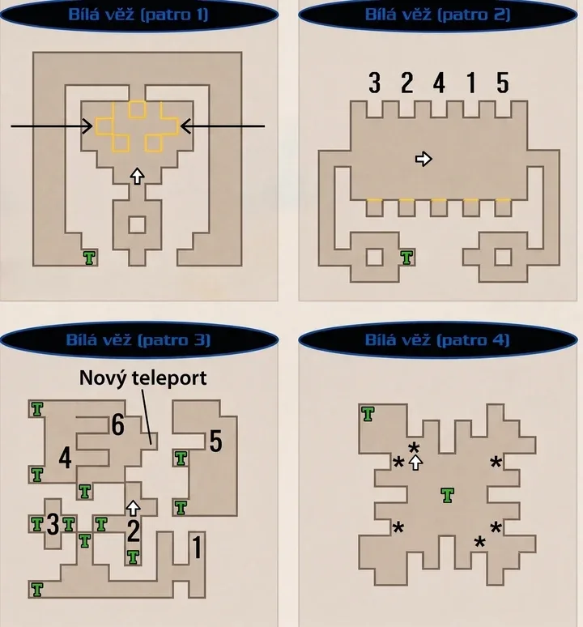
Protože Bílý mág je klasický „good guy“, nebudete v jeho věži v ohrožení života, ale tak jednoduché to také mít nebudete. Každé patro totiž reprezentuje jeden logický oříšek, který budete muset na své cestě vzhůru rozlousknout.
První patro. Oříšek první je vlastně velmi jednoduchý. V místnosti jsou sloupy a obraz, který znázorňuje sloupy v určité pozici, v jiné, než ve skutečnosti jsou. Stačí jen do prostředních sloupů vrazit (ve směru šipek) a zarovnat je do řady s oběma krajními. Pak se jen nechejte vynést teleportem do dalšího patra.
Druhé patro. Další patro už je těžší a někteří lidé jej považují za nejtěžší z celé věže, ačkoliv to tak jistě nemělo být. Vejdete totiž do místnosti, ve které je na jedné straně pět gongů a na straně druhé pět soch. Každé soše přísluší protilehlý gong. Se sochami se dá mluvit. Poté co si se všemi promluvíte, nebude jistě problém určit s jistou tolerancí jejich příbuzenské vztahy. Podle věku rozezníte gongy a symetricky ke vstupnímu teleportu se vám otevře i výstupní teleport. Pro jistotu je v mapě uvedeno pořadí, ve kterém máte gongy rozeznít.
Třetí patro. Před započetím řešení další hádanky si hru raději uložte. Pokud si znemožníte postup dál zmáčknutím špatné páky a nemáte uloženou pozici, můžete si celou Bílou věž obnovit do původního stavu příkazem v konzoli: echoes-of-the-past. Zadávejte jej u vstupu do 1. patra, jinak se zablokujete za dveřmi, které nejdou otevřít z druhé strany.
Patro je rozděleno do šesti místností. V každé místnosti je jeden nebo dva teleporty a jedna páka. Rozdělte družinu a ke každé páce postavte jednoho z hrdinů. Pak mačkejte páky chronologicky tak, jak to ukazují sluneční hodiny ve stejné místnosti. Vždy, když zmáčknete páku, zavře se vám teleport vedoucí do následující místnosti. Pokud zmáčknete páky správně, pak se teleporty znovu objeví a navíc se v poslední místnosti objeví i teleport vedoucí do následujícího patra. Pořadí je opět označeno v mapě.
Čtvrté patro. Poslední hádanka je čistě logickou záležitostí. Představte si, že každá ze stěn je logický výrok, tedy dva symboly spojené logickou spojkou. Zamáčknutá deska znamená pravdu, nezamáčknutá nepravdu. Dohromady však musí celý výrok být pravdivý. Navíc se nesmí stát, že bude na jedné světové straně deska s určitým symbolem zamáčknutá a na jiné světové straně nezamáčknutá. Hvězdičkou jsou v mapě opět označeny desky, které se mají zamáčknout. Uprostřed místnosti se otevře teleport, kterým se dostanete do posledního patra. Tam jen přečtěte všechny desky a pak se zjeví mág Nimeth, se kterým můžete mluvit. Jak již bylo řečeno, rozhovor s ním vám leccos osvětlí. Především však dostanete spoustu dalších úkolů. Než se do nich pustíte, je potřeba vyřídit ještě jednu věc, vydejte se tedy do Lesa dryád.
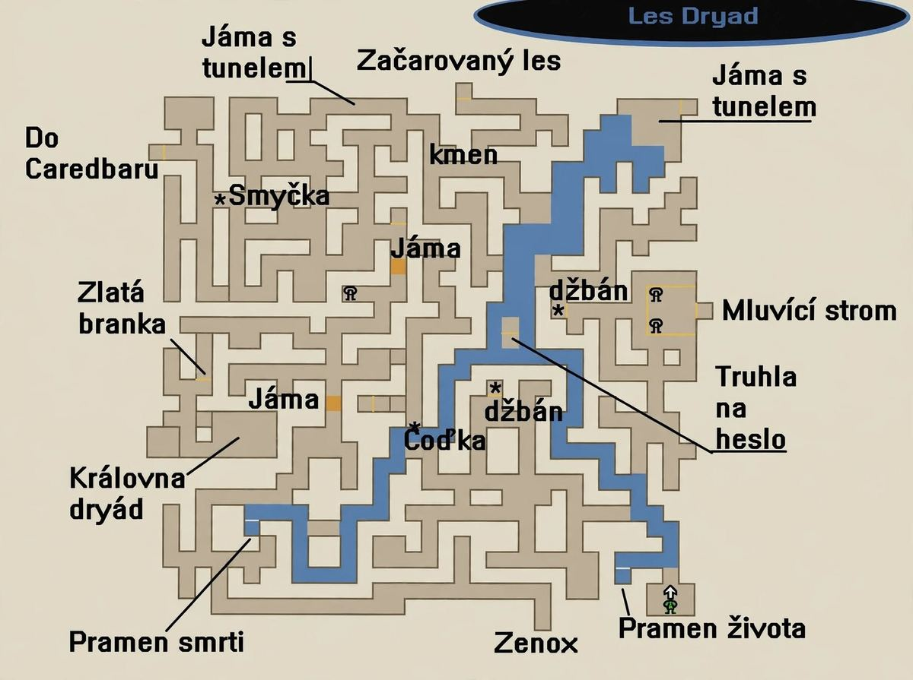
Les dryád je místo plné nebezpečných pastí, krásných dryád a tuhých stromů. Vejdeme-li do lesa z Caredbaru (ještě je možné dostat se do něj ze Začarovaného lesa a přes Zenoxe), první, na co narazíme, je oko z liány a prostě ji obejdeme přes iluzorní stěnu. Druhou past překonáme tak, že přes jámu s listím položíme kmen stromu, který jsme našli za další iluzorní stěnou. Do jámy, která není zakryta žádným listím, můžete klidně vejít. Tato jáma je vlastně tunelem, který vás dovede na jinou část ostrova. Přes další jámu, která je zakryta listím, se přehoupněte pomocí liány zavěšené hned vedle. Pokud náhodou naleznete nějakou houbu, tak ji nejezte! To by bylo k pastím.
Teď se podíváme na hlavní úkol, který v Lese dryád musíte splnit. Především si obstarejte zlatý a stříbrný džbán (ještě před tím je možné pokusit se mluvit s mluvícím stromem). Pak naplňte zlatý džbán z pramene života a stříbrný džbán z pramene smrti. Vraťte se k mluvícímu stromu a zalijte jej z obou džbánů. Mluvící strom vám dá za odměnu svitek s heslem. Doplavte se na ostrůvek uprostřed lesa a pomocí hesla otevřete truhlu. Dostanete zlatý klíč. S tímto klíčem si otevřete zlatou branku bránící v cestě ke královně dryád. Tato emancipovaná žena by vás nejraději zabila, ale pokud jí předáte posvátný strom, nejen že ušetří váš život, ale obdaruje vás grálem. Ten se bude ještě hodit.
Když nepočítám pláně, kde můžete zatím jen tak pro zábavu zabíjet tworgy, je to v podstatě vše, co je možné zatím v části před horami udělat. Pokud opravdu budete zabíjet tworgy, zjistíte, že z nich můžete stahovat kůže a ty pak ve městě prodávat. Nechejte si však alespoň šest kůží pro vlastní použití. Hory lze překročit na dvou místech. Prvním je soutěska strážená trollem. Troll je sice trochu tužší soupeř, ale vzhledem k tomu, že nechodí, lze na něj vymyslet poměrně jednoduchou taktiku. Se Zenoxem, který stráží druhý přechod, už je to těžší. Ten se, pravda, také nehýbe z místa, ale je mnohem silnější a rovněž na něj nelze útočit z dálky. Je však možné s ním mluvit, a pokud uhodnete jeho hádanku, pak vás nechá projít. První správnou odpovědí je námořník a druhou je kentaur.
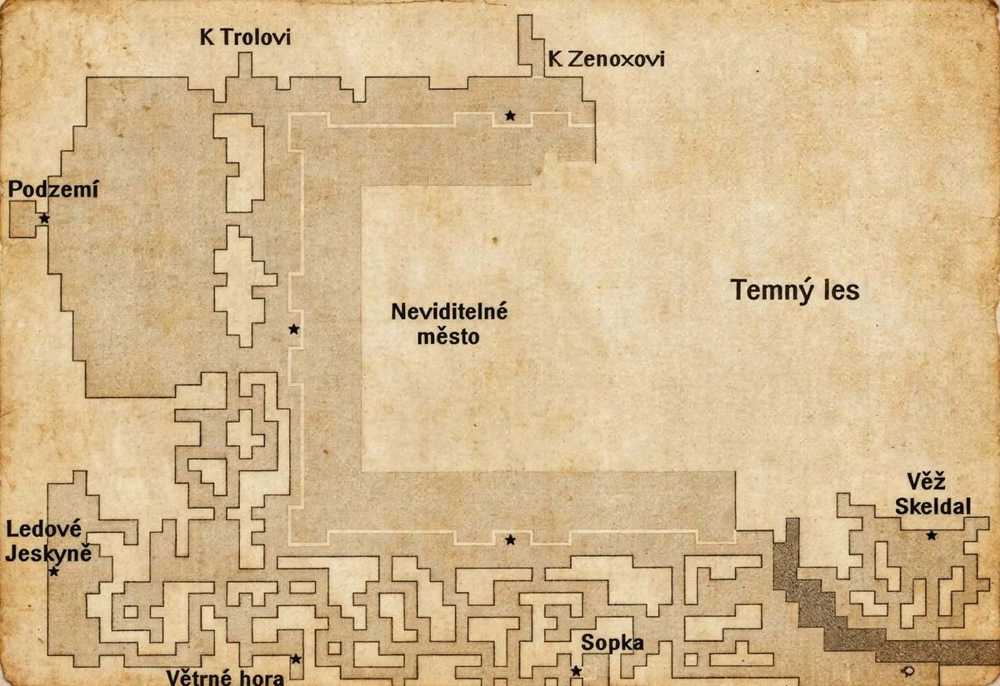
Ať už jste vstoupili do lesa ze soutěsky s trollem nebo ze stezky se Zenoxem, první, koho potkáte, bude šelma zvaná Apagh. Dříve než půjdete do jakéhokoliv dalšího levelu, doporučuji jich několik pozabíjet a vycvičit se tak (jsou to první nepřátelé se třemi akcemi za kolo). V Temném lese není dohromady nic, co by si zasloužilo detailnější popis. Pouze vchody do dalších levelů: Neviditelného města, Podzemí, Ledových jeskyní, Větrné hory, Sopky a samozřejmě magické věže Skeldalu, která je sice cílem vašeho putování, ale nechejte si ji až na konec. V lese se nachází také několik kouzelných run, z nichž nejzajímavější bude asi Reinkarnace, která se nachází na vnějším okraji řeky oddělující Skeldal od zbytku levelů.
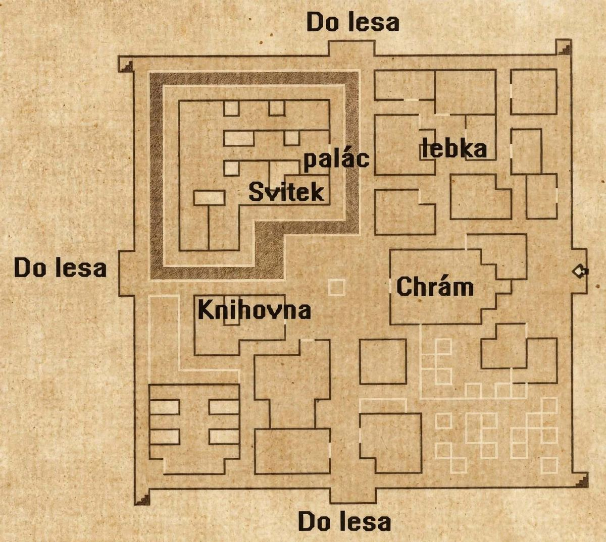
Až se trochu procvičíte v Temném lese, doporučoval bych jít nejprve do Neviditelného města. Kromě toho, že jsou zde nejschůdnější nepřátelé, lze zde relativně snadno přijít k penězům, protože po rytířích zbude nějaký ten kus brnění a po mniších kutny a magické hole, které se dají v Caredbaru zpeněžit. V knihovně naleznete několik svitků a hlavně grimoár k vyvolání démona, který se bude hodit později. Do chrámu se dostanete s pomocí paklíče. S palácem už to bude obtížnější. Přes vodní příkop se dostanete po mostě, který se zvedne poté, co otočíte lebkou nabodnutou na kůl (na mapě lebka). Dveře do paláce se pak otevřou otočením čtyř kol umístěných na hradbách. Vaším cílem je nalezení první ingredience Svitku myšlenky vítězství.
Druhé místo, které byste měli navštívit, je Větrná hora. Kromě několika dalších kouzelných run se zde nachází kouzlo Teleportace, bez kterého hru nelze dokončit. Na první plošině se srázem naleznete tunel, kterým projdete na druhou stranu hory, tam zmáčknete páku a otevřou se vám první dveře.
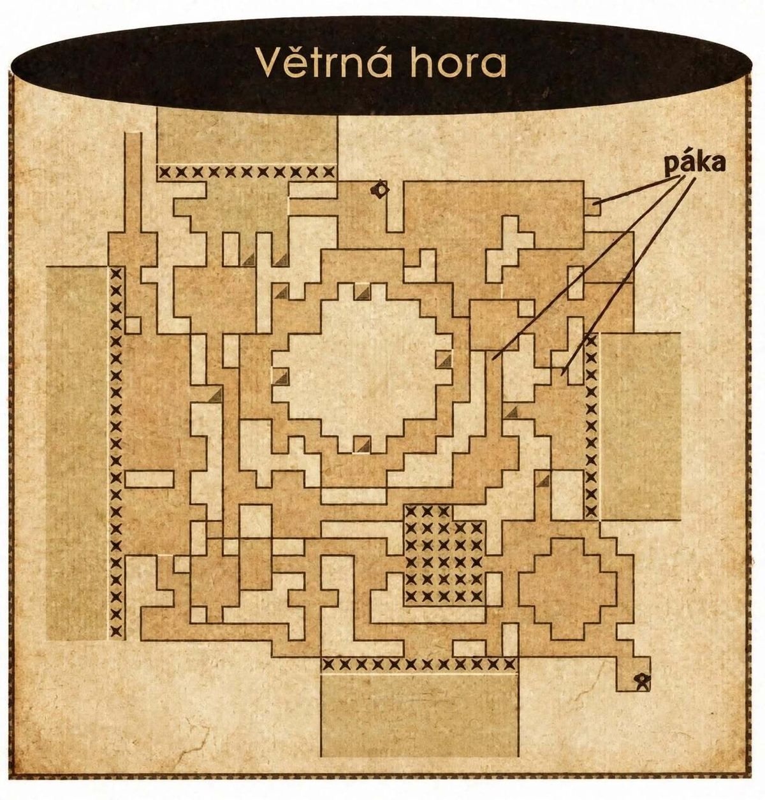
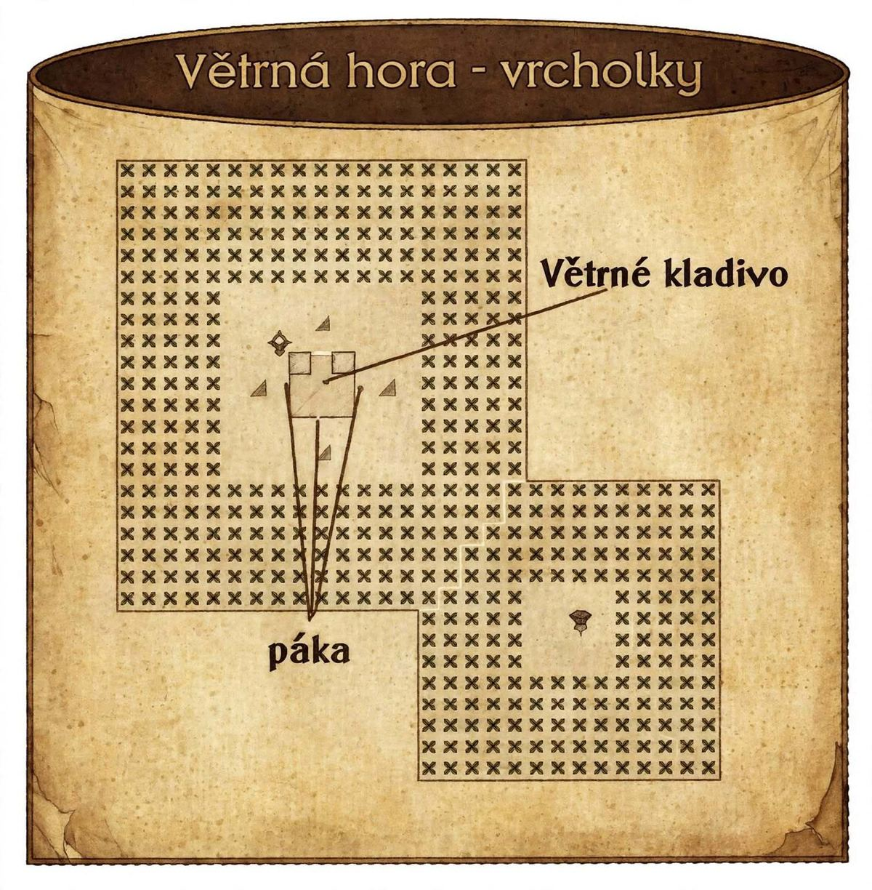
Dojdete k další páce (na mapě k ní vede prostřední čára) a s její pomocí si otevřete cestu k poslední páce, která se skrývá za iluzorní stěnou. Ta vám otevře cestu k vrcholu. Na vrcholu narazíte na dva draky, můžete je buď zabít, nebo mezi nimi prokličkovat, protože větrní draci jsou poměrně pomalí a neohrabaní. Stlačením tří pák se otevře místnost, ve které naleznete druhou ingredienci – Větrné kladivo.
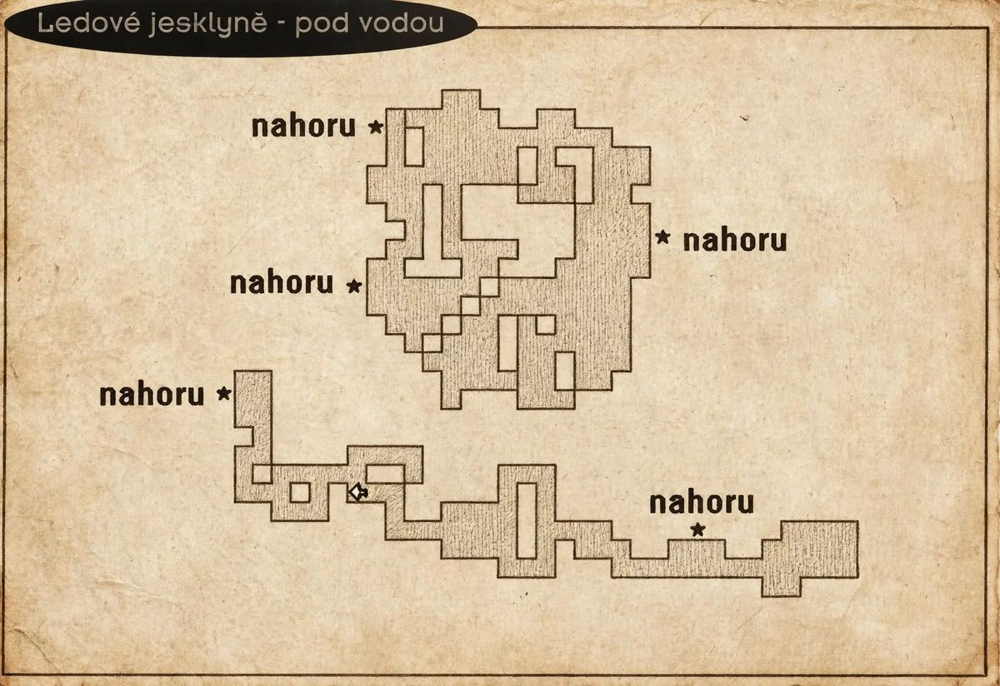
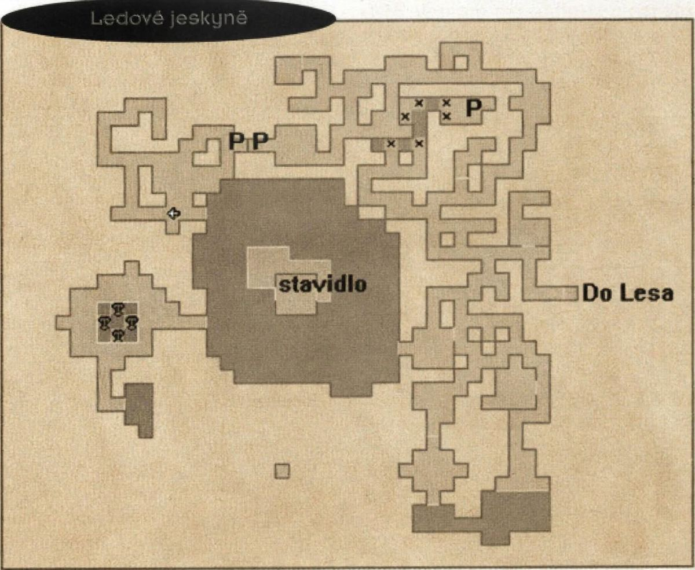
Dříve než půjdete do Ledových jeskyní, ulovte na pláních několik tworgů (to jsou ti skorobizoni) a u kožešníka v Caredbaru si z nich nechejte udělat obleky. Bez nich totiž v jeskyních umrznete. Druhou věcí, kterou musíte koupit (tentokrát u alchymisty), je měchýř z belsenské rybky, který umožní jedné postavě dýchat pod vodou, a s ní i všem, kteří stojí spolu s ní na jednom políčku. Na mapě máte vyznačeny tři páky. Jejich stlačením se otevřou dveře do místnosti uprostřed jezera. Na ostrov se pochopitelně dostanete přes vodu, stejně jako k jedné z pák. K další se lze dostat jednoduše po souši a k poslední se teleportujete – nejprve na malý ostrůvek (v případě, že nemáte oblast zmapovanou pomocí kouzla) a pak až k poslední páce. Uvnitř místnosti naleznete kromě ledového draka stavidlo, jehož zvednutím se obrátí směr víru (na mapě jako jezírko se čtyřmi teleporty). Vstoupíte do víru a ten vás zanese až do místnosti, kde je uložen třetí artefakt – Voda z fontánky královny Mithel.
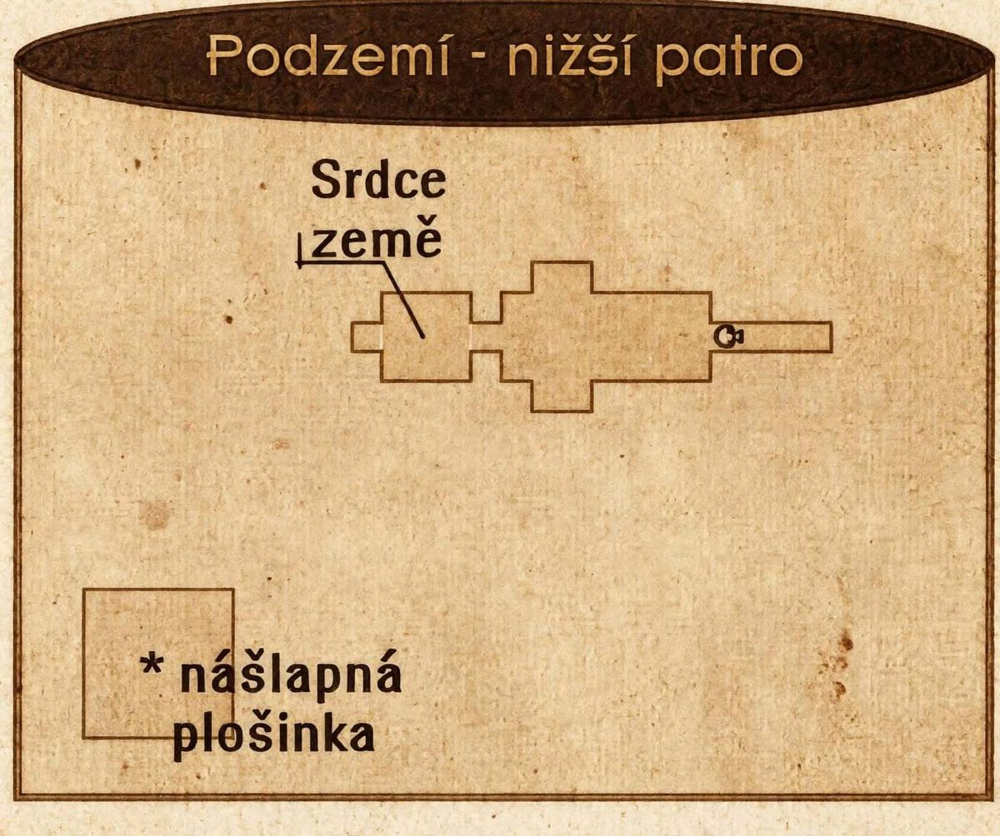
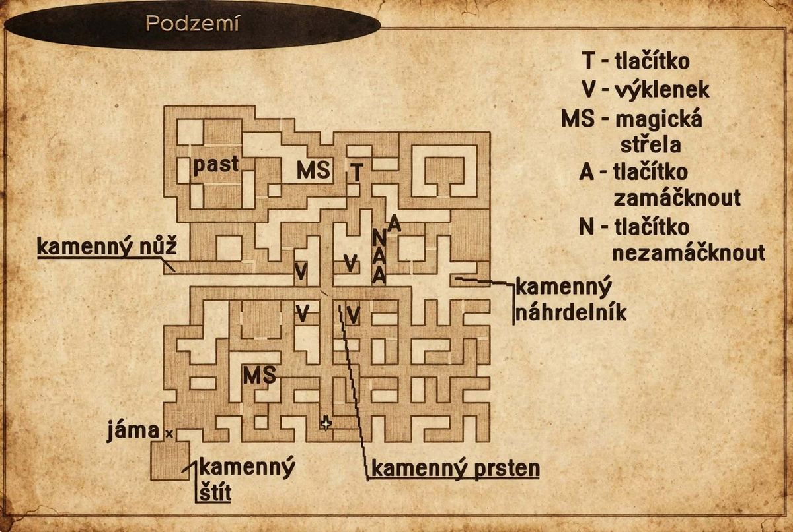
Předtím než vstoupíte do Podzemí, pořádně se vyzbrojte, protože Podzemí se musí projít naráz. Tento level je rozdělen přibližně na čtyři kvadranty a v každém se nachází jeden kamenný artefakt. Ke kamennému noži, který je v levém horním kvadrantu, se dostanete tak, že skloníte čtyřem drakům na stěnách rohy dolů. V tomtéž kvadrantu je ještě velmi mocný meč z oceli Avalonu. První překážkou na cestě k němu jsou mříže, které proti vám pošlou ze zdi magickou střelu. Mříže však lze z bezpečí otevřít pomocí malého tlačítka vedle nich. Místnost s mečem je však sama o sobě pastí, která se aktivuje, když se vracíte zpátky s mečem. Potom se totiž otevřou postranní mříže a na vás se vyřítí tři mágové a jeden obří pavouk. Lze je porazit a procvičit se tak, ale když necháte někoho venku, pak si po sebrání meče můžete své druhy přivolat pomocí kouzla.
V pravém horním kvadrantu se nachází kamenný náhrdelník, ke kterému se dostanete tak, že namačkáte tlačítka v kombinaci, jak ji ukazuje mapa. Kamenný artefakt je za tajnou stěnou, která se otevře dalším miniaturním tlačítkem. V pravém dolním kvadrantu se nenechejte zmást bezhlučnými teleporty a dojděte si pro kamenný prsten. V levém dolním kvadrantu na vás číhá další magická střela, která je aktivována otevřením nejbližších dveří. Vyhnete se jí jednoduše tak, že ustoupíte dozadu. Propast překonáte tak, že vhodíte do díry jakýkoliv předmět, který zatíží nášlapnou plošinu v dolním patře, a ta díru zavře. Všechny čtyři kamenné artefakty vložte do výklenku poblíž středu. Tím se otevře teleport do nižšího patra, kde naleznete čtvrtou ingredienci – Srdce země.
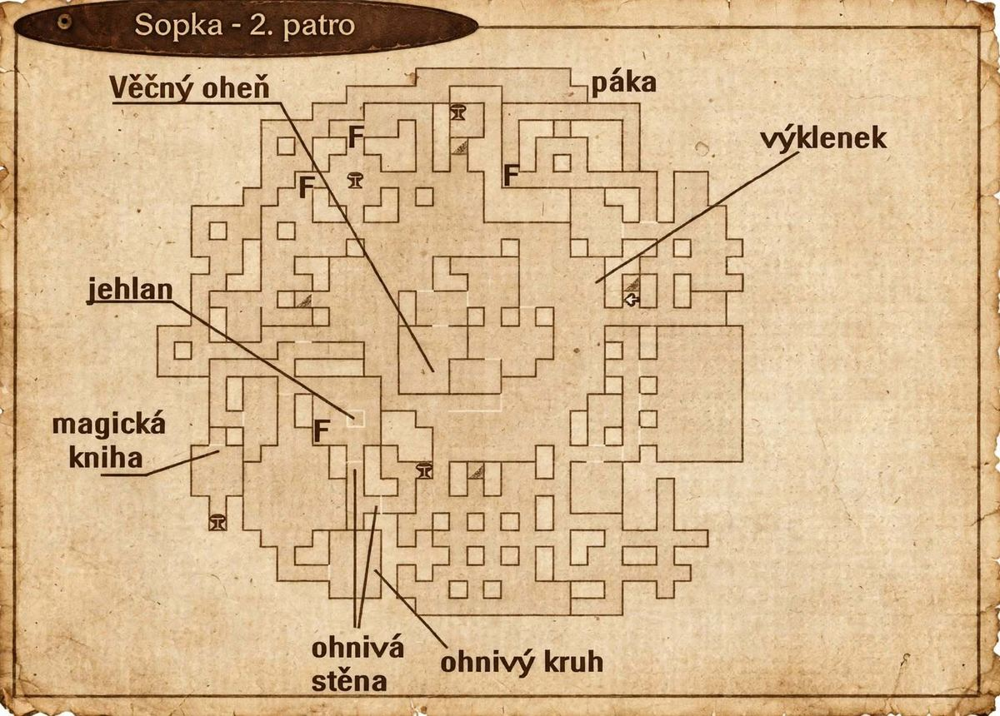
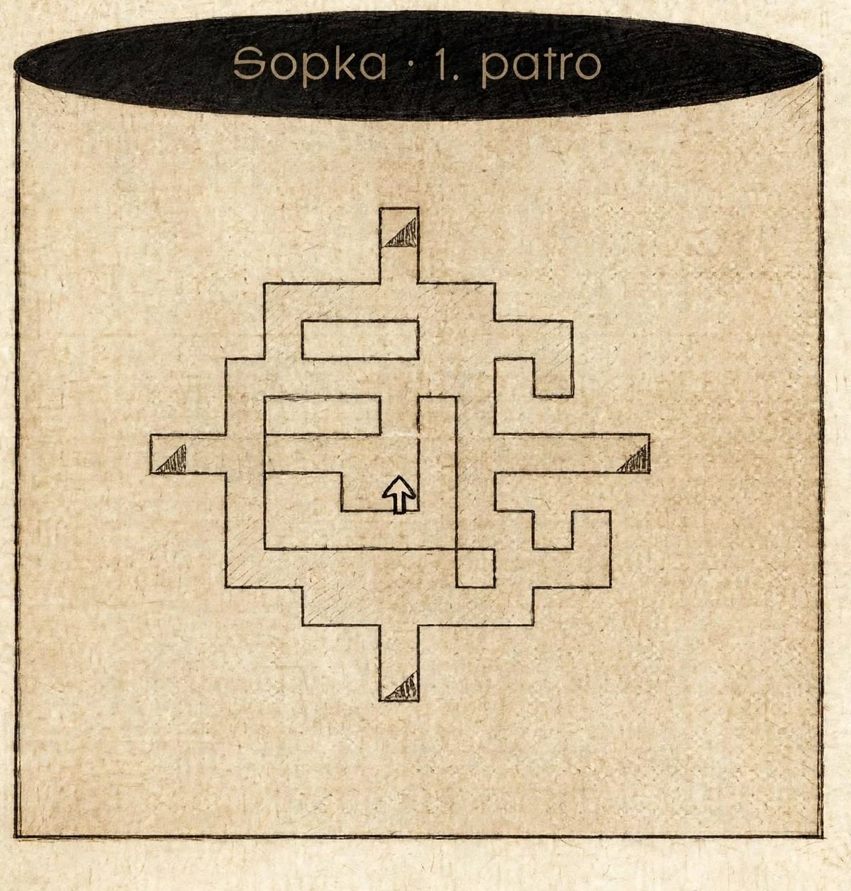
Pro poslední artefakt si zajděte do nitra sopky. Dříve než se tam vypravíte, zásobte se lektvary Chladných vod. Ty vám na šest hodin umožní přežít v pekelném žáru uvnitř sopky. V sopce můžete narazit na několik drobných problémů. První je s teleportem, do kterého střílejí firebally. Do teleportu ať vstoupí jen jeden dobrodruh, a to ten, který má nejlepší ochranu proti ohni. V místnůstce nalezne avalonské brnění. Zpět si jej přivoláte kouzlem. Další problém může nastat u jehlanu a ohnivých stěn. Opět necháte jednoho schopného mága venku. Postavte se před jehlan a otočte jím, pak rychle naklikněte kouzlo teleportace a vybraného hrdinu za krátce zhasnuvší stěnu teleportujte. Přes druhou stěnu se dostanete tak, že otočíte druhým jehlanem a uděláte rychlý úkrok doprava. Až si váš hrdina přečte všechna kouzla živlu ohně z magické knihy, přivolejte si jej zpět. No a nakonec zmáčkněte páku, dojděte si pro prsten Ohnivý kruh a vsaďte jej do výklenku. Uprostřed ostrůvku naleznete poslední artefakt – Věčný oheň.
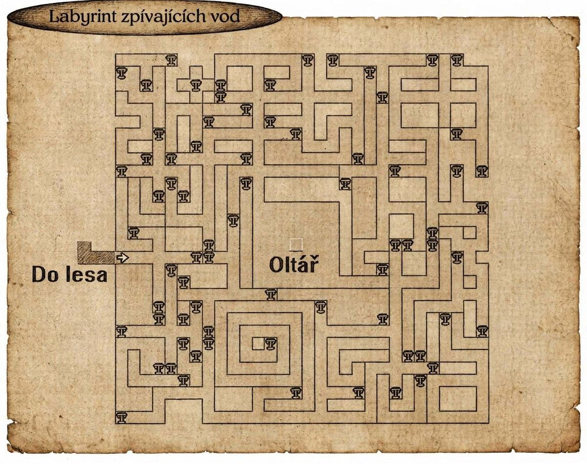
S pěti ingrediencemi se vraťte do Bílé věže k Nimethovi pro pochvalu. Nimeth vám přistaví ke kraji věže loď a ta vás doveze až do Labyrintu. V Labyrintu se orientujete pomocí Panovy flétny a veršů Labyrintu zpívajících vod. Vždy když se dostanete na nějakou křižovatku, zahrajte na příslušnou světovou stranu tu melodii, která jí podle svitku přísluší. Pokud se ozve správný zvuk (ten, který dané straně opět podle svitku přísluší), pak se tím směrem vydejte. Pokud se ozve cokoliv jiného, pak se tím směrem jít nemá, anebo jste zahráli špatnou melodii. Až se dostanete doprostřed Labyrintu, vyvolejte pomocí grimoáru démona a přikažte mu, aby vám z donesených ingrediencí vykoval Meč odplaty. Zpět se dostanete opět výše uvedenou metodou. Na zpáteční cestě nezapomeňte vystoupit a vyzvednout si poslední kouzlo.
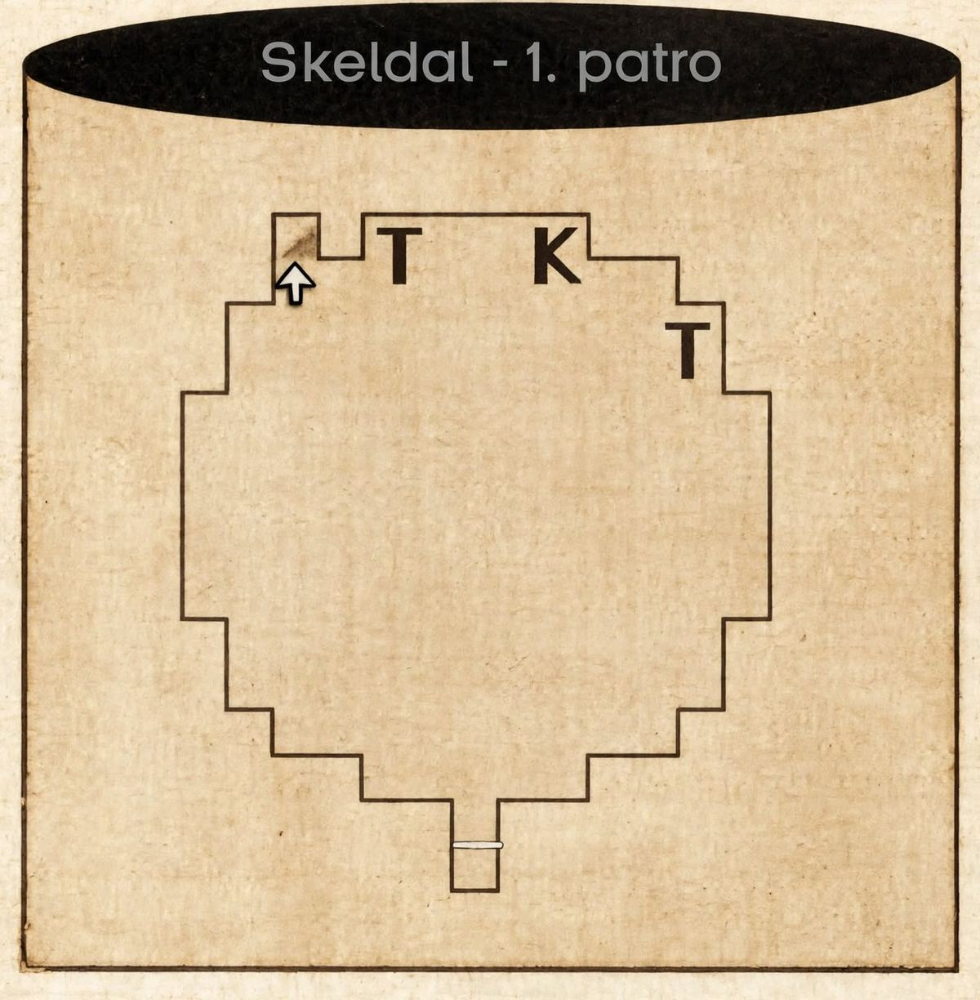
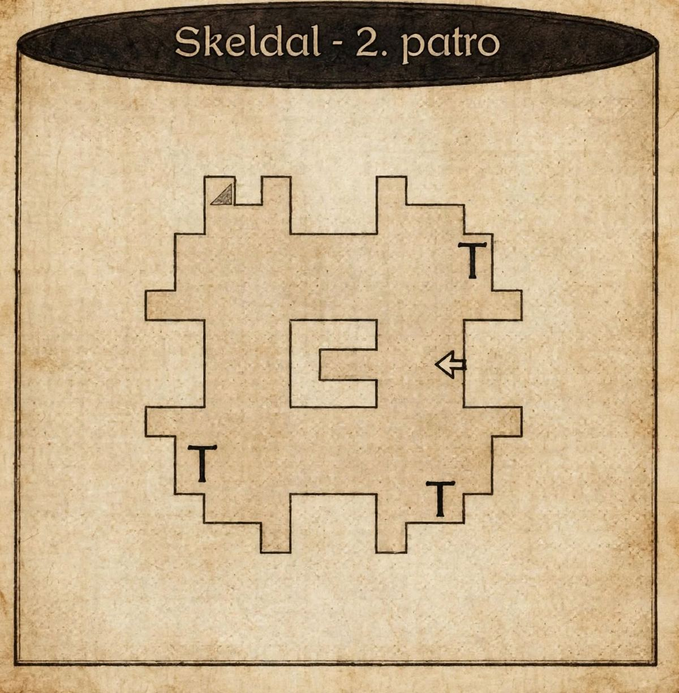
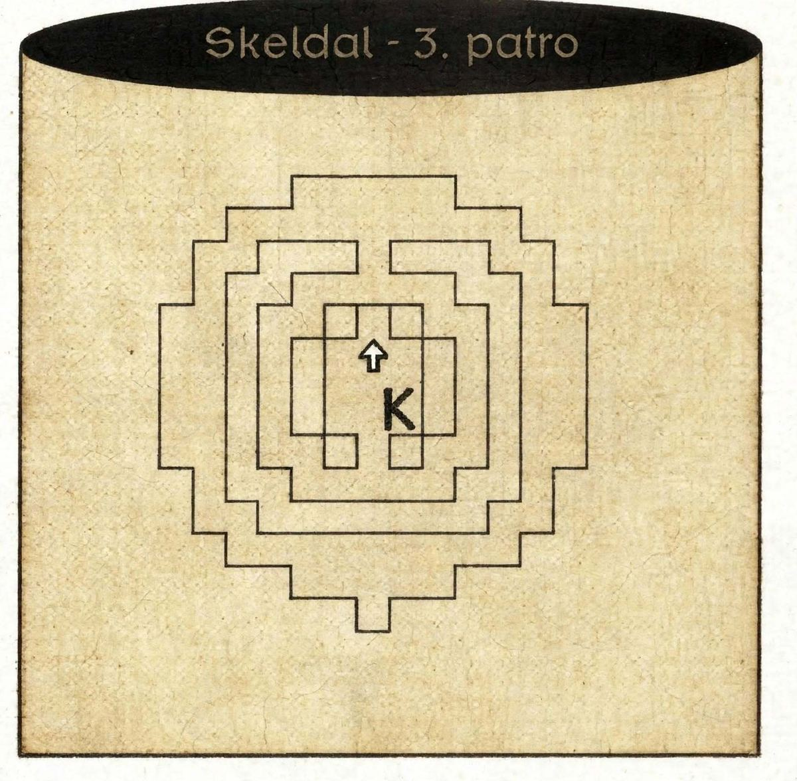
S Mečem odplaty vstupte do magické věže Skeldal. Během výstupu nezapomeňte sbírat koule. V prvním patře jsou zavěšeny speciální Damoklovy meče, a když pod ně vstoupíte, zabijí celou vaši družinu. Je potřeba dva z nich sundat pomocí dvou tlačítek. Ve druhém patře zamáčknutím tří tlačítek otevřete tajnou stěnu, za níž je teleport do dalšího patra. Ve třetím patře jsou místo dveří gilotiny. Ty se aktivují v momentě, kdy do nich vstoupíte a v okruhu, který necháváte za sebou, je ještě nějaká potvora. Je tedy potřeba vždy, než půjdete dál, všechny pozabíjet.
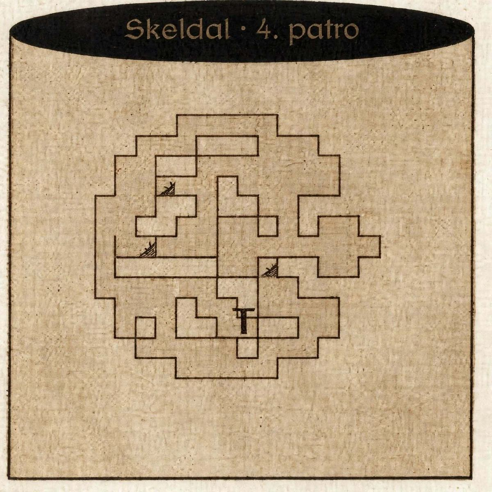
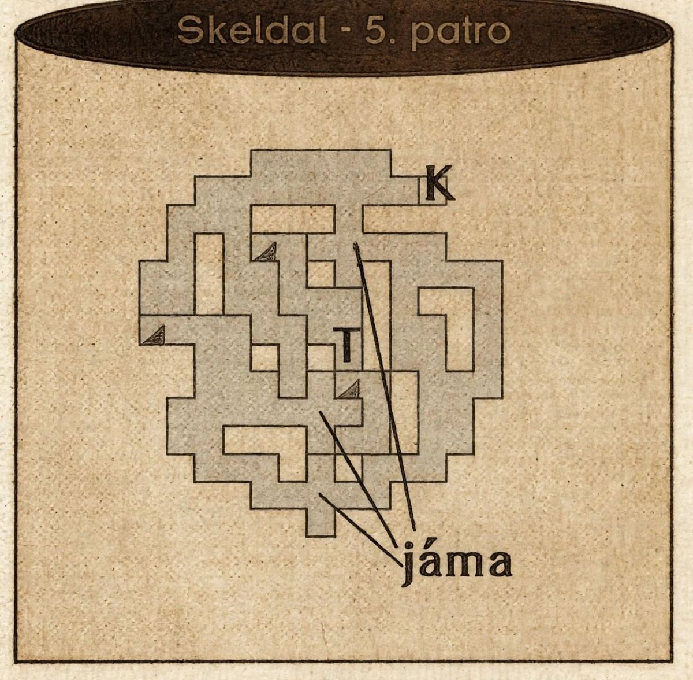
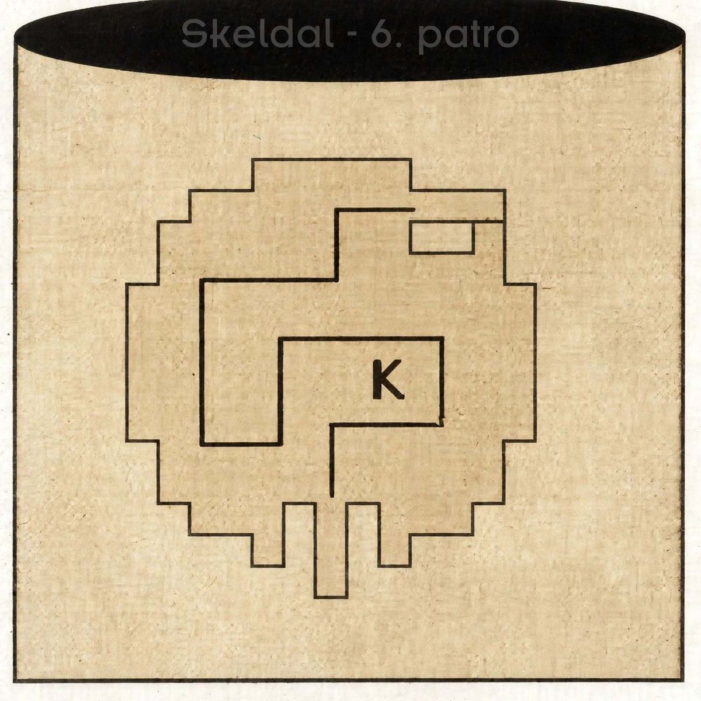
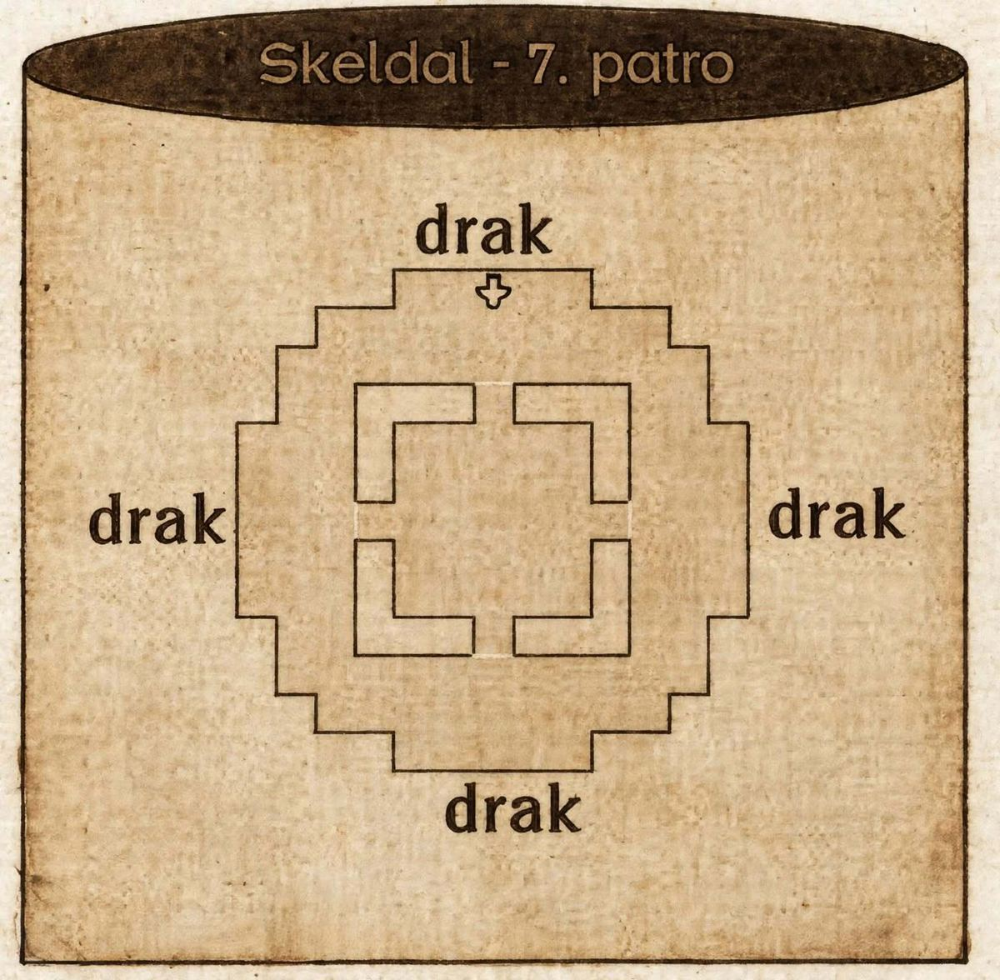
Čtvrté a páté patro jsou spojené, je v nich několik děr, iluzorních stěn a tlačítek. Vždy když narazíte na tlačítko, zmáčkněte jej a ono uzavře některou díru. K jednomu tlačítku se dostanete tak, že propadnete jednou dírou. V šestém patře je potřeba se držet stezky, jinak budete velmi rychle umírat. A konečně sedmé patro je patrem posledním. Nashromážděné koule vložte do tlamy čtyř draků zavěšených po stěnách a dveře do haly, kde se pětice odpadlých mágů připravuje k vyvrcholení kouzla, se otevřou. Vstoupili jste v poslední chvíli.
Zdroj: ceskehry.net (návod: Score, úpravy: Majel007, skeny map: dungeony.cz; tipy a triky: Paladin). Upraveno pro Android verzi – opravy překlepů a poznámky k ovládání. Kapitoly Základy hry, Ovládání na Androidu, Další tipy a Taktika v souboji napsal autor Android verze.